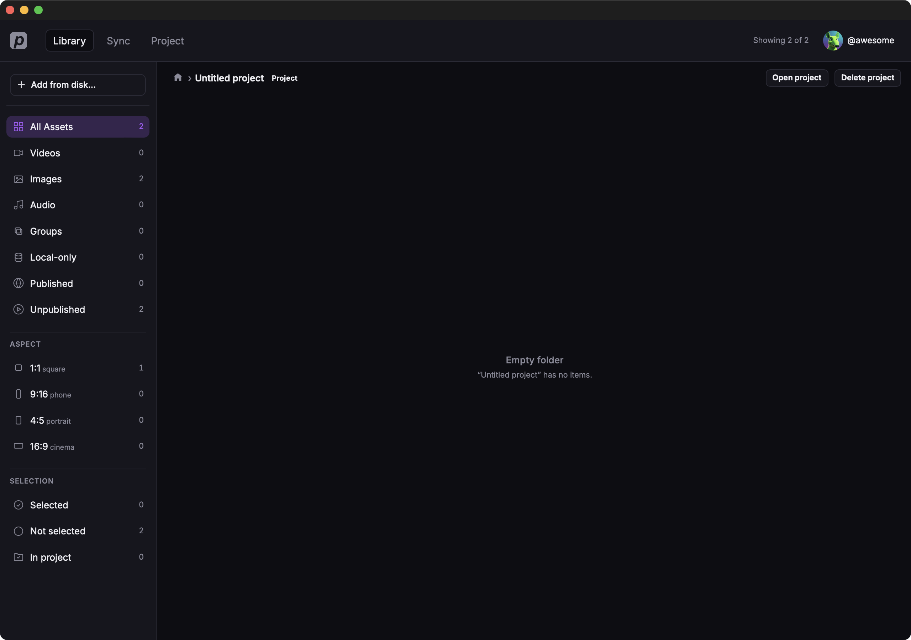
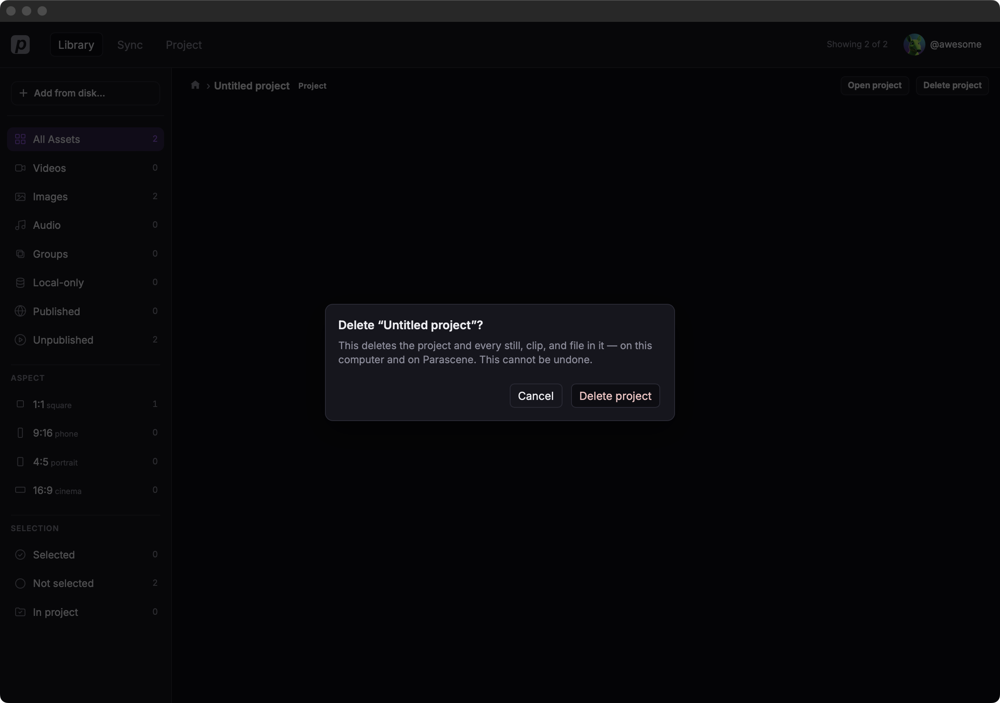

Projects
A project is the document you edit on this computer — not on the website. Creating one also puts a Project tile on the Library board. Director and Editor stay hidden until a project is loaded.
Create
- Click Project in the top bar.
- If a project is already open, click Close project on Director first.
- Click New project.
The new project is named Untitled project and opens in Director. A matching Project tile appears on the Library board.

From Library you can also select stills or clips and click New project… in the sidebar. Those files become part of the new project.
Open, close, rename
- On the Projects list, click a name under Recent. The app opens Director.
- Edit the Project field to rename. Press Enter or click away to save.
- Set Aspect ratio (1:1, 4:5, 9:16, 16:9). This is the project frame Editor and generate will use.
- Click Close project to return to the chooser.

Delete
- Open Library and click the Project tile.
- Click Delete project next to Open project.
- Confirm with Delete project.


That removes the project and every still, clip, and file in it — on this computer and on Parascene.
On the Projects list you can also click Delete next to a name under Recent. Same warning, same result.
Annotations on Recent
A project may show Needs repair, Needs folder, Retry setup, or Legacy. Open it to repair or finish folder setup. Some older projects offer Open as legacy to skip creating a folder.